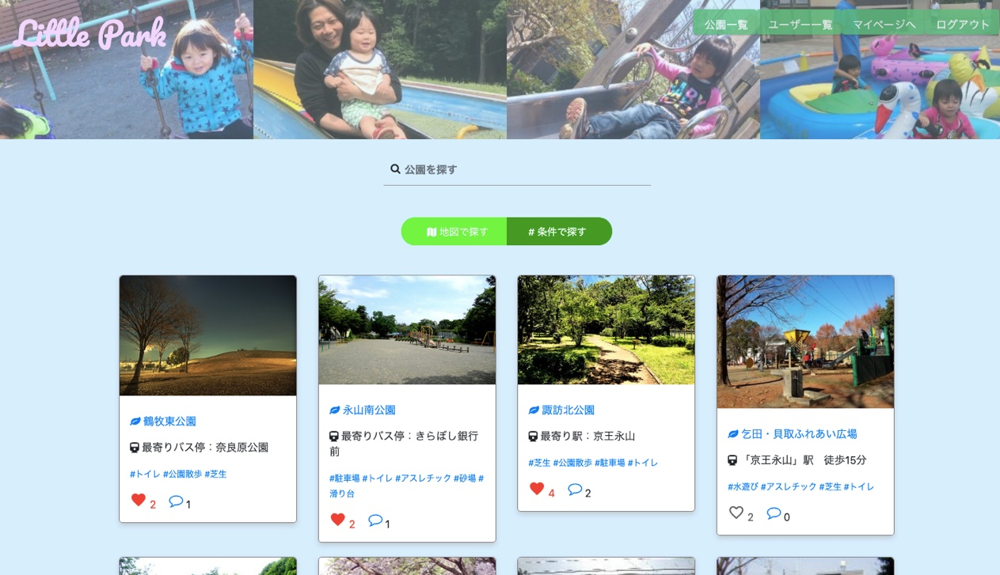
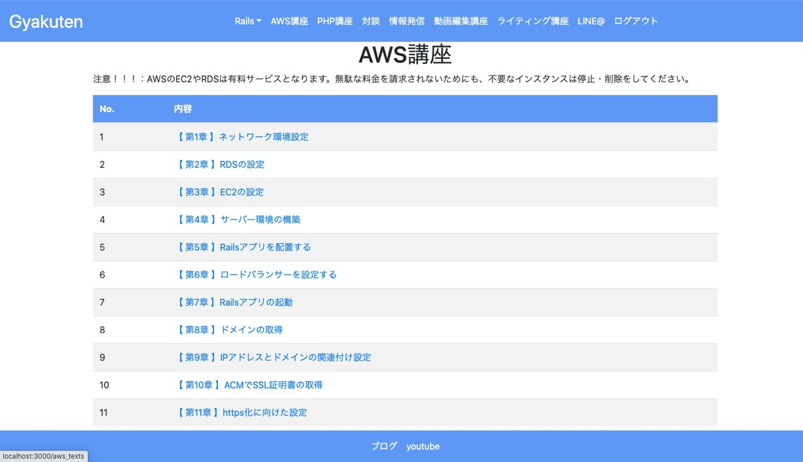
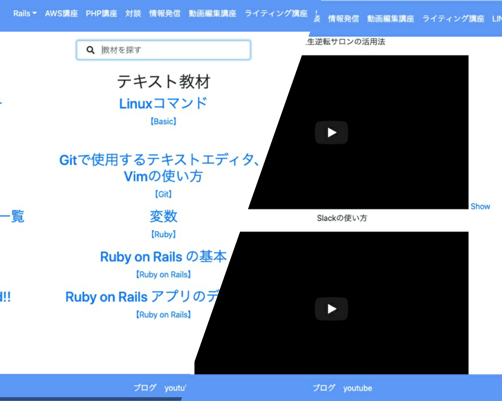
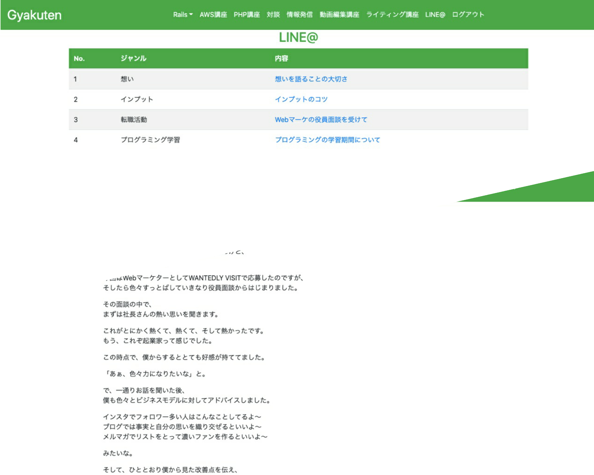
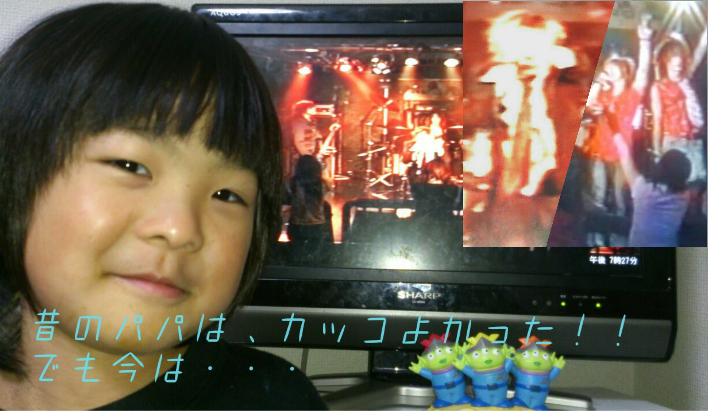
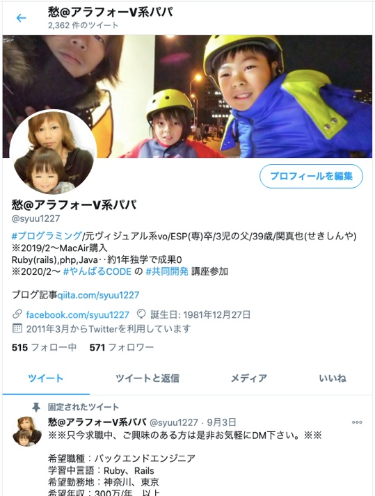
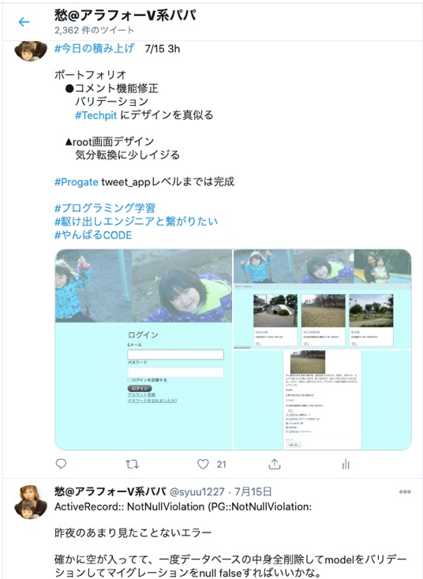
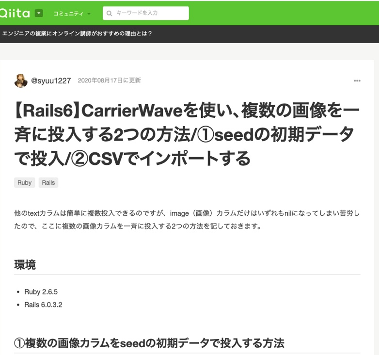
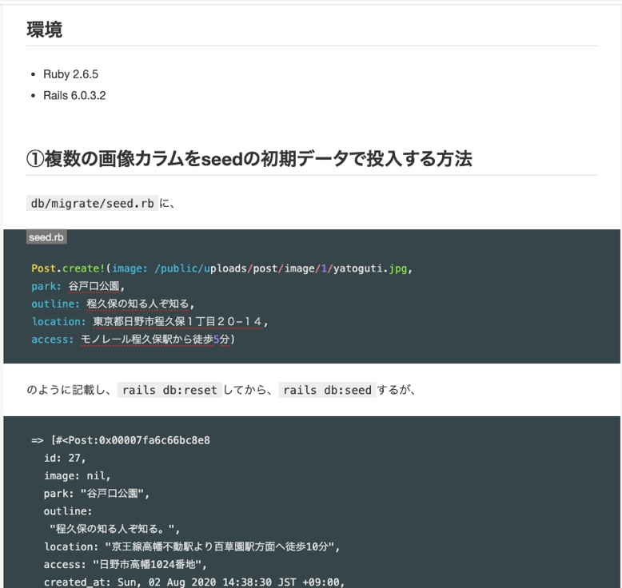

自己紹介
・1981年12月27日(A)、長野県生まれ。 3児(※全員男子)の父親。
・2000年3月 長野県立伊那弥生ヶ丘高校 卒業。
・2004年3月 東京都内の私立大学経済学部 中退。
・2006年3月 ESPミュージカルアカデミー・アーティスト科 卒業。
※20代は、アルバイトをしながらバンド活動。
・2013年11月、建設業（型枠大工）の会社 入社。
・2020年10月、建設業（型枠大工）の会社 退社。
※現在、求職活動中。
どのようなエンジニアになりたいか
1.問題を解決（解消）する
プログラミングを通して学んだ事ですが、エラー解決の鍵がマニュアルの外や意外な足下にあったり、どうしても出来ない時は思い切って方向性を変えたら意外とうまく行ったりする経験を何度もしました。 日常でも世の中全般でも、日々様々な問題が起こっています。その問題から、今まで見えなかった盲点を発見したり、新しい視点から問題を解決したり、そもそも問題を問題ではないものとして、解消していけるようになりたいと思っています。2.既成概念を破る
その都度与えられた状況の中で、本来のやり方を思い切って捨てて自分に出来るやり方で乗り切った場面がありました。従来の様々な慣習の中で、残すべき事をきちんと守った上で、必要のない事を変えていく。その上で新しい慣習や新しい常識を創って行きます。3.確かなモノを残していく
今現在、４０歳を目前にしてプログラマーを目指している事。その先で、創っていくモノや変えていく事をSNSやブログ等、様々な形で残して行きます。ほんの少しでも、誰か一人でも、より多くの人の人生に良い形で影響して行きますように。ポートフォリオ
①公園検索アプリ(個人開発)

Little Park
使い方
・文字、地図、条件タグで、好きな公園を検索出来ます。
・公園の詳細の閲覧や、「いいね」、「ログイン」などを利用したい場合は、新規登録をしてログインします。
・ゲストログイン（閲覧用）でログインできます。
・本ポートフォリオは、スマートフォンからもご覧いただけます。
概要
・いつでも気軽に徒歩でふらっと子どもを連れて遊びに行ける公園検索アプリ。
・既存の大手公園検索アプリでは紹介されていそうな大型の有名公園ではなく、もっと身近で、規模の小さいご近所の気軽な公園を紹介。
・「地域密着」「コミュニケーション」「自己重要感」
※実装の詳細については、「ソースコード」のREADME.mdにて記載しています。
②プログラミング学習教材のクローンアプリ(共同開発)
  
※現在運用中の有料アプリのため、デプロイとソースコードは非公開
概要
・rails(Ruby)、PHP、マークアップ、AWS等、体系的に学べる学習教材アプリ
・動画とテキストの2種類の学習方法を実践出来ます。（※最初に動画を閲覧後、テキストで学習する事を推奨）
・本アプリは、スマートフォンからもご覧いただけます。
担当タスク
・Questionモデルとquestionsテーブルを作成。
・質問一覧ページを作成。
・cssによるデザイン。
・CSVファイルのインポート。
・seeds.rbに初期ユーザーを追加。
・ログイン関連ページを日本語化。
・Bootstrapによるデザイン。
・フラッシュを追加。
・回答投稿フォームを作成。
・複数の回答を投稿できるように実装。
・Bootstrapによるデザイン。
タスク抽出と実装。
・LINE@コンテンツのcolumn,controllor,viewの作成。
・column(title,genre,content)のcsvデータを作成しインポート。
・AWS講座のコンテンツのcsvデータをインポート。
・rails_textsのcolumn(genre,title,content)作成。
・rails_textsのview ページを作成。
・cvsデータをインポート。
・indexページに検索機能を実装。
・Youtubeの埋め込みの投稿機能の実装。
・model、viewは各コンテンツ事に作成。
・bootstrapによるデザイン。
スキル
言語：HTML5、CSS3、Ruby
開発環境：Linuxコマンド、Heroku、Git/GitHub
DB：PostgreSQL、MySQL
フレームワーク：Rails、jQuery、Bootstrap
コミュニケーションツール: Slack、Trello
Railsの主な経験
・Git/Githubの基礎（コミット、ブランチ、プッシュ、マージ、プルリク、コンフリクトの解消等）
・CRUD処理
・Devise機能実装
・Bootstrapの導入
・Active Admin実装
・Ransac実装
・Rakeタスク実装
・CSVインポート実装
・CarrerWave実装
・RSpec実装
・アプリの共同開発
20代はヴィジュアル系ボーカリストを目指してフリーターとして過ごして来ました。どうしても希少価値のある存在になりたくて、浮世離れした人生を送ってきたと思います。

30代で結婚。それとほぼ同時期に現在の型枠大工の仕事に就きました。所帯を持ち、ついに野心を持たない、平坦な人生におちつくと思われて過ごして来ました。

しかし、40代を目前にして、再び目醒めました。
「Web系プログラマーになる。」
「社会を変える、既成概念を超える、後世に残せる、新しい社会システムの一片を担い、創っていく。」
Ruby(Rails)の学習期間は間、キャリアプランの変更でphp、java(基礎のみ)の学習期間を挟み、半年以上。
プログラミング学習全体では、html、css、javascript(jQuery)、Bootstrapなどのマークアップも含め、1年以上学習を続けています。
CRUD実装からgithubを使ったアプリの共同開発も経験済です。
Twitter による学習記録とプログラミング関連の情報発信は、ほぼ毎日。
 
Qiita によるプログラミングスキルについての記事投稿も行っています。
 
20代の頃の「夢追い」とは違います。プログラマーになる事は夢ではなく、「前提」です。
プログラミングは単なる「スキル」ではなく、日々の日常や、世の中に絶えず発生する困難な問題の解決のための知恵を最大限に活かすための最高のルーツだと思っています。
私はプログラミングのスキルを磨くことでそれ以上に、問題解決と、全く新しい社会システムや、全く新しい世界を創っていくために、勇気を持って一歩踏み出せる人間になりたいと思っています。